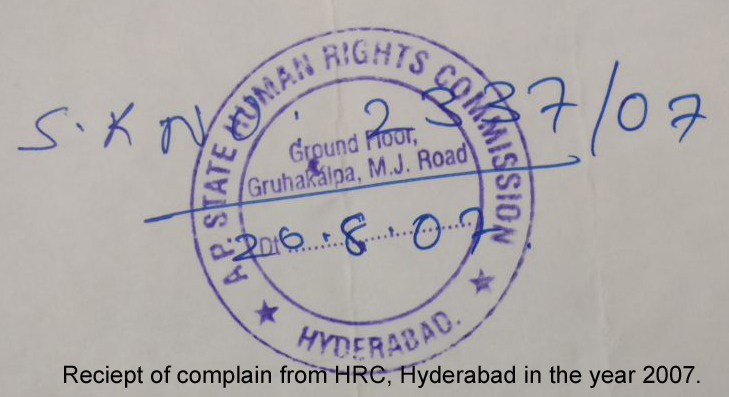

In a bit detailed -
Hope and Service are the two factors upon which Let's Fight is built.
Its main intention is to bring all kind and intellectual hearts together for the well-being of society.
Blood donation is a sacred and invaluable act with no alternative except donation. Even this has become an act of Business with the mediators. Through Let's Help, there will be no middlemen and no money involved, ensuring a pure and direct approach to donation.
A bit of background-

There are many instances that resulted in registering a lets-fight domain.
As an individual, I tried helping people.
In 2007, when I was pursuing my education at Kachiguda, I saw a woman with mental disabilities who needed help and was alone, not covering herself and sitting in the same spot day and night. To find a way to assist her, I went to Erragada hospital, tried complaining at Kachiguda Police Station, visited old age homes (at this point, I met Dr. Sunitha Krishnan of Prajwala), and finally complained at the Human Rights Commission, which was then headed by Justice Subhashan Reddy.
Everyone I approached greatly appreciated my concern, but no one, including the great Human Rights Commission, could assist.
Another instance-
In 2010, while working in West Maredpally, I encountered a watchman with two special needs children who couldn't afford medical expenses. After discussing with Dr. P. Hanumantha Rao and his daughter from Sweekaar Upkaar Rehabilitation Center, they agreed to admit the children and offer the mother a job. I also encouraged our colleagues to contribute financially, and we provided additional support. But everything is little.
In that short journey, I learnt from people like Sunitha Krishnan and Hanumantha Rao. My experiences with the Human Rights Commission made it clear that government assistance is often limited or non-existent. Wherever I go, I see people in need, but I cannot help or do very little.
Small donations to old age and orphan homes or giving Shawls to the poor in winter never satisfied me. It's too little.
Most importantly, I realised that there are many people with similar thoughts out there, and getting them all under one roof is crucial where Let's-help would play its role.
The simple fact is that ‘I’ can do little, but we all ‘I’s together can do much.
Together, Let's help create a helping hand, a supportive system, and, finally, a positive change. Let's begin by registering as a donor and a Leader.